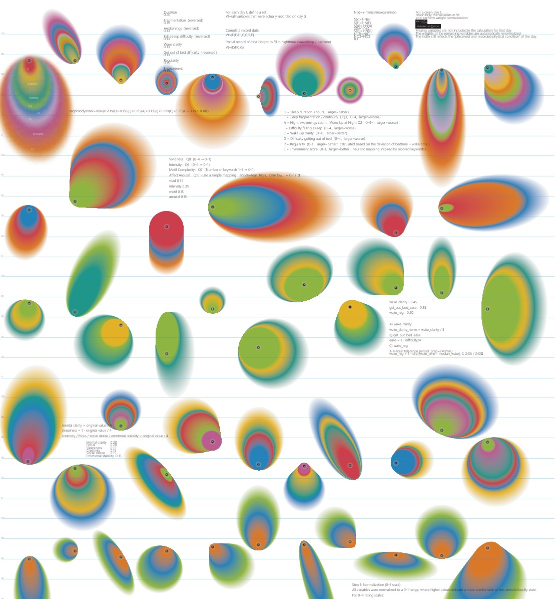
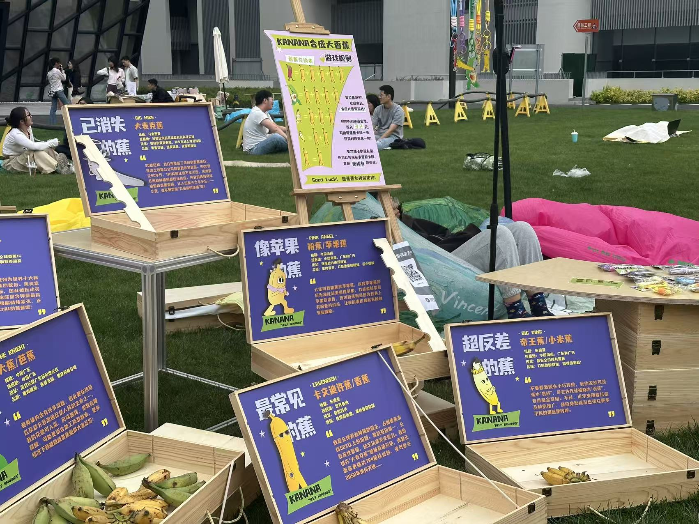
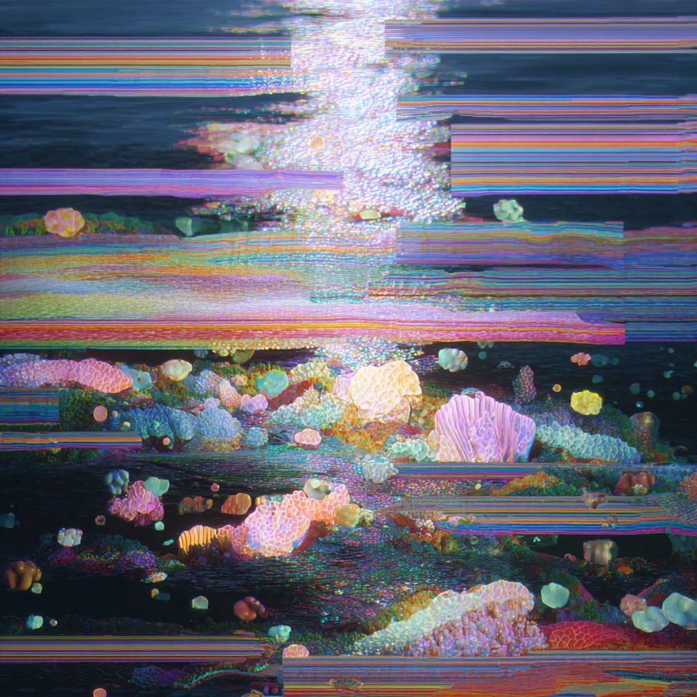
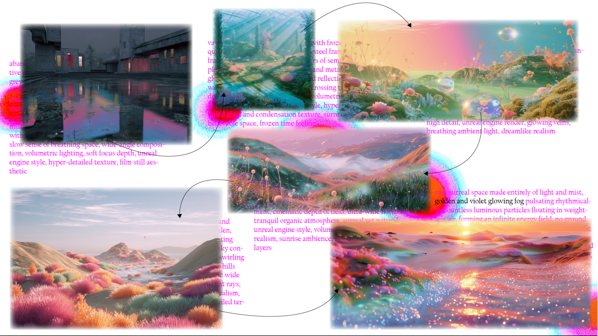

Han Guo
Media designer and creative technologist working across synthetic landscapes, ecology, AI, and interactive systems.

LANDPLAY
A playable landscape system where players control environmental conditions and the system generates evolving synthetic landscapes.

From Imagined Color to Landscape Reality
Imagined colors translated into biological, mineral, industrial, and designed landscape conditions.

Datanteater / Body Electric
Daily reflections and body data become a changing digital organism and environment.

KANANA
A playful public-welfare brand for banana biodiversity conservation and ecological equality.

Mantis Shrimp Umwelt / Second Nature
A speculative visual study of non-human perception, color, and environment.

Dream Core Landscape
Dreamlike environments, artificial nature, and atmospheric world-building.
Han Guo is a media designer and creative technologist currently studying Synthetic Landscapes at SCI-Arc. Her work moves across AI workflows, interactive systems, visual research, and ecological narratives, with a focus on how landscapes can be imagined, measured, generated, and experienced.